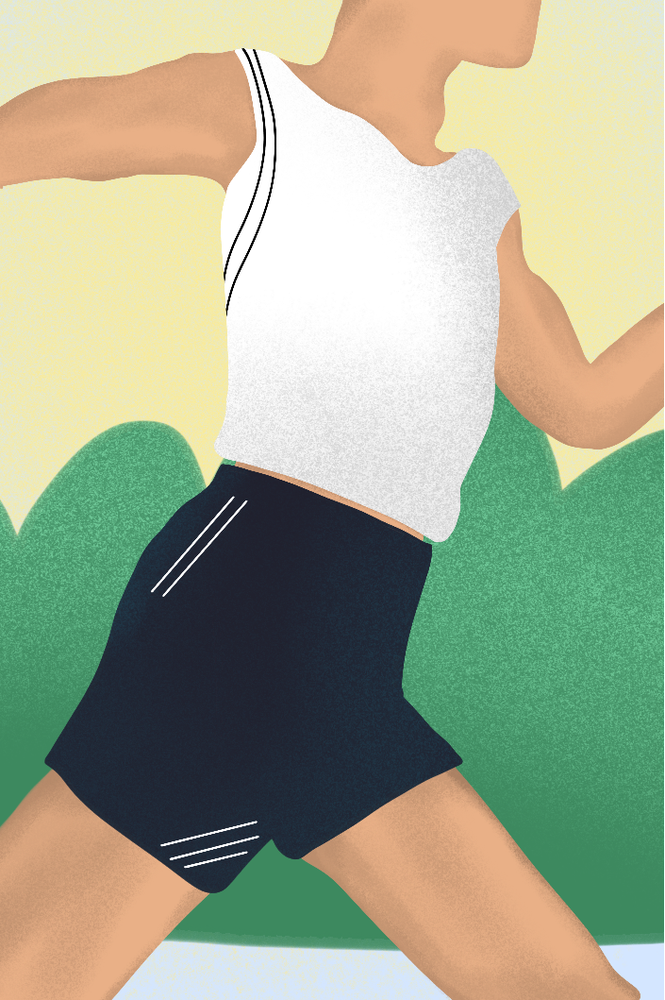
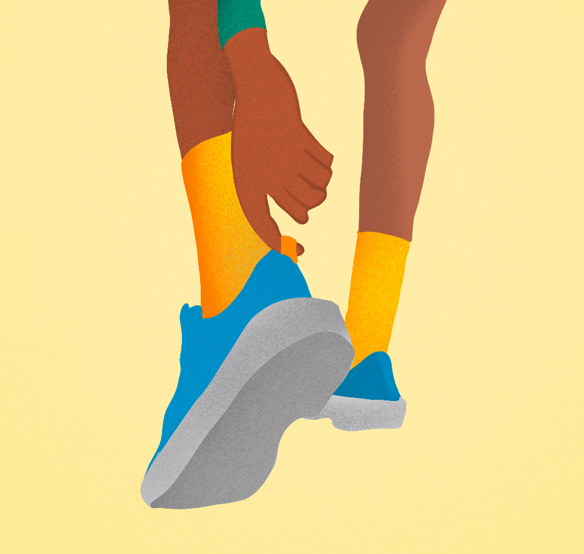
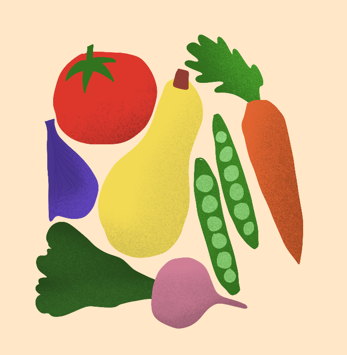

Gesundheit & Bewegung
Laufen verbessert die Ausdauer, Konzentration und das Wohlbefinden. Es ist nicht nur Sport, es ist Balance.
Während du hier bist: Entdecke mehr über mich, mein Training und wie du ein Teil daovn werden kannst.
Weitere Themen

Trainingstipps
Aufwärmen • Regeneration • Routine
Kleine Routinen mit großer Wirkung für deinen Laufalltag.

Ernährung
Energie für lange Strecken
Tipps für sinnvolle Mahlzeiten rund um Training & Regeneration.